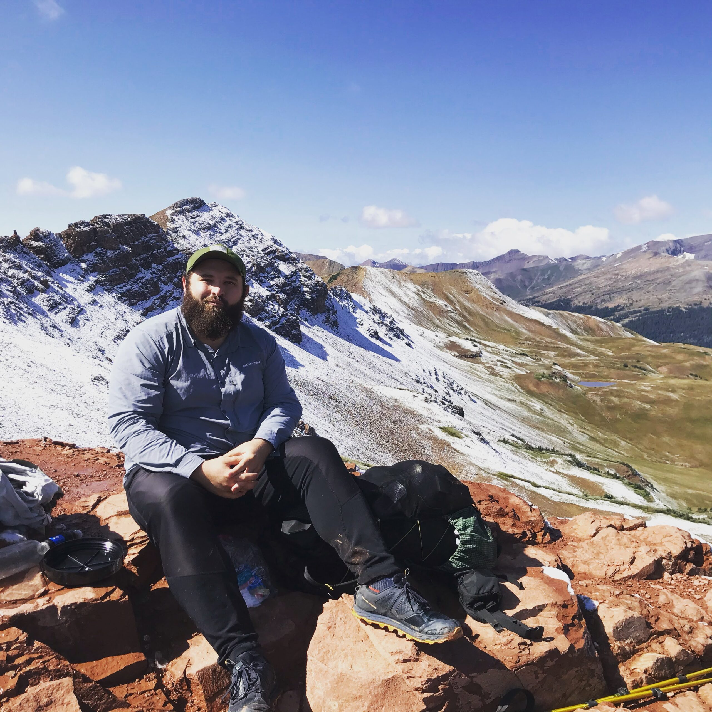
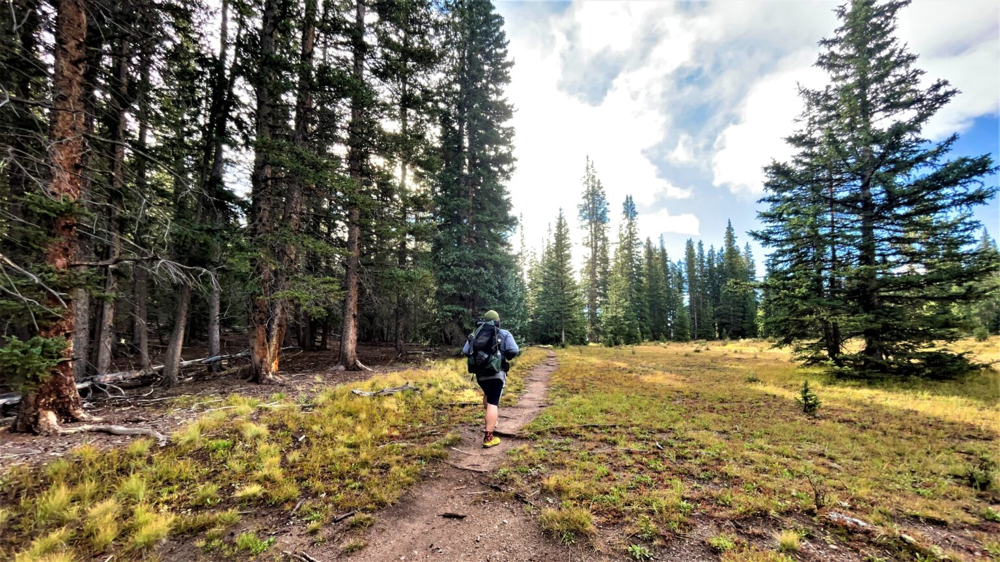
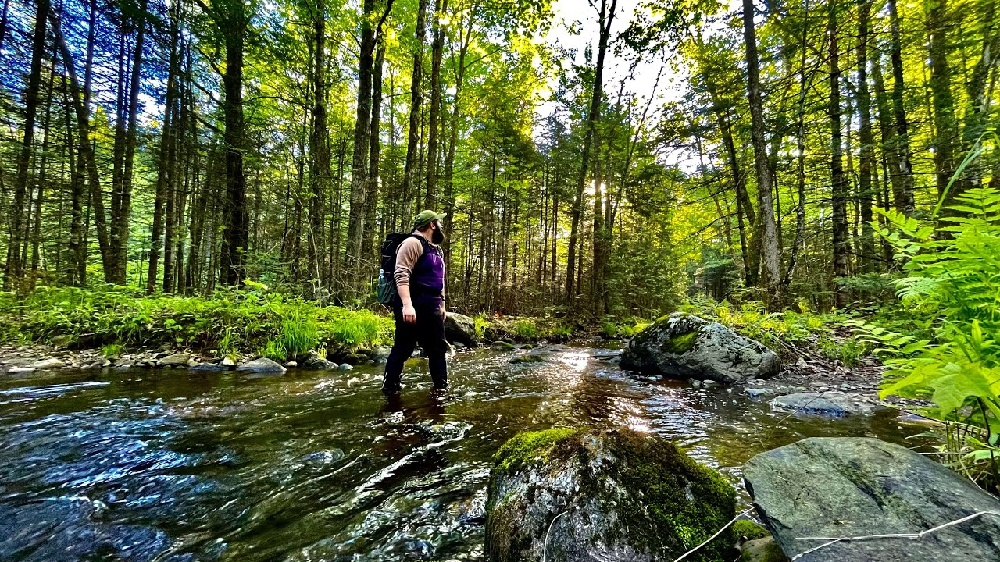
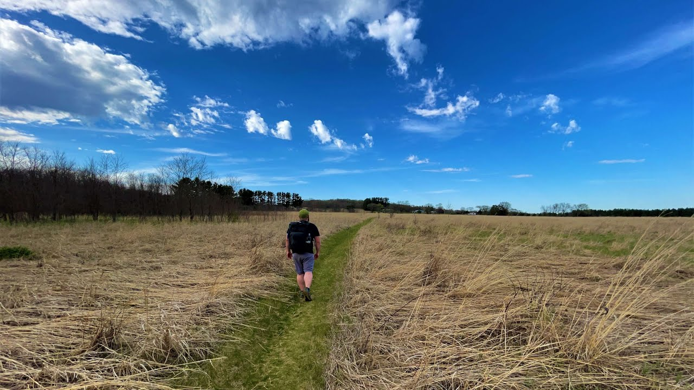

About Me
I'm Cade Rosche and I love to hike. In 2018, I did a 700 mile LASH of the Appalachian Trail, doing the first 1/3 of the trail. This solidified my love of backpacking. Since then, I've done many smaller trips to beautiful places. In early 2021, I decided I should start documenting my hikes on YouTube.

Hikes

Hiking 70 Miles Alone on the Colorado Trail | Denver to Kenosha Pass
December 5th, 2020

Hiking 33 Miles Alone on the Ice Age Trail
June 6th, 2021

Hiking on the Ice Age Trail | Mecan River Segment
May 6th, 2021